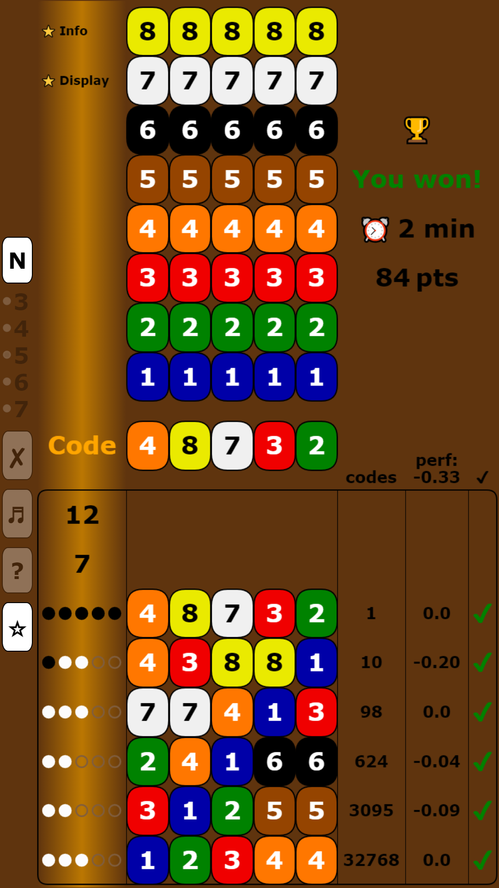
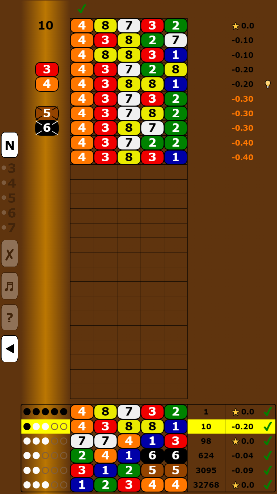
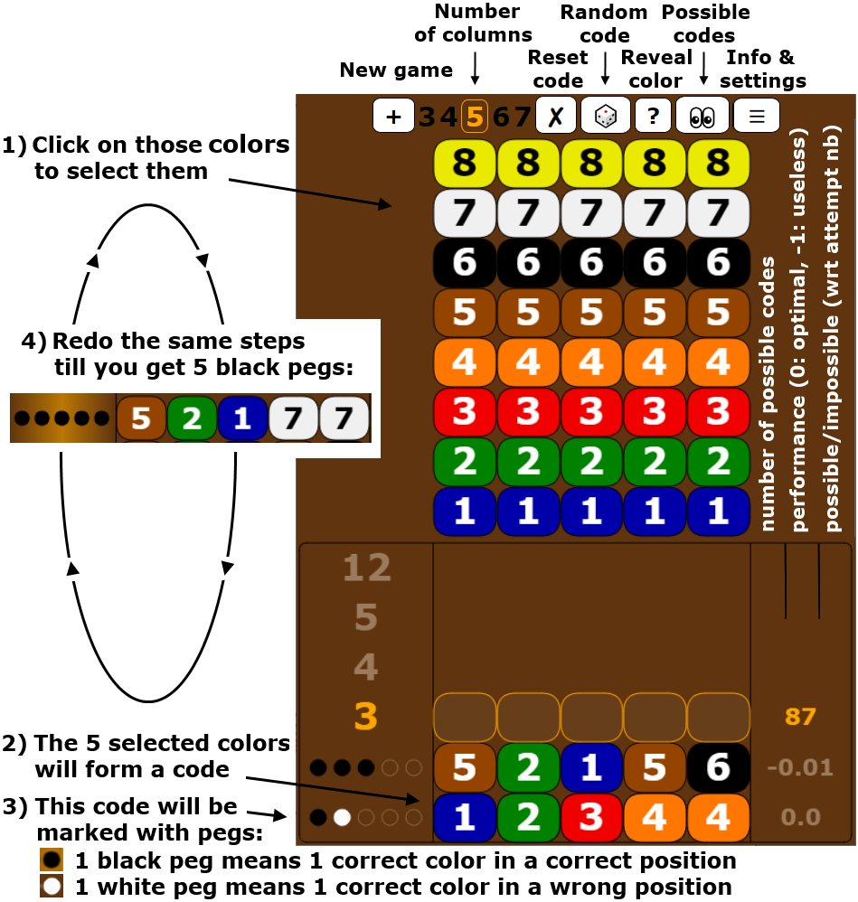

Super Master Mind
Play Super Master Mind and evaluate your strategy! During the game, each of your attempts is compared to what the optimal strategy would have played, which will help you to progress.At each attempt, the number of possible codes is displayed, and the lists of possible codes are shown at game end.
Several displays (with colors or numbers) and modes (from 3 to 7 columns and from 5 to 10 colors/numbers) are possible.
Game scores are stored online to rank players and follow their progression.   On your smartphone: play with the android app
{kind=link}
{kind=link}
Game rules
The goal of Super Master Mind is to find out a secret code of 5 colors chosen randomly among 8 (with duplicate colors allowed).The player makes successive attempts, and each code played is given pegs:
- a black peg ⚫ indicates the existence of a correct color in a correct position,
- a white peg ⚪ indicates the existence of a correct color in a wrong position.
The game is won when 5 black pegs are got (secret code discovered) or lost when the maximum number of attempts is reached. For Master Mind, the rules are the same with a secret code of 4 colors chosen randomly among 6, and more generally M among N for other code breaker games.
How to play?
click to enlarge{kind=link}
Strategy evaluation / performances
Behind the graphical game interface, the program is assisted by a calculator which will give you hints to find the optimal strategy. This calculator compares what you played to what the optimal strategy would have played. For each code played, it compares "the average number of attempts to find secret codes" which is reachable when an optimal code is played to this same average number when your code is played, and then displays the difference next to your code.For example:
- 0.00 means that what you played was optimal: no difference between your code and the optimal code(s),
- -1.00 means that what you played was useless: 1 attempt was lost on average, thus -1,
- -0.50 means that what you played was not optimal: you lost 1⁄2 attempt on average to reach secret codes in comparison to an optimal code. That means that if the optimal strategy reaches secret codes in 4 attempts on average, your code (followed by an optimal strategy) will reach them in 4.5 attempts on average. Of course, if you are lucky, this inefficient code may be the secret code, in which case you will win the game instantly!